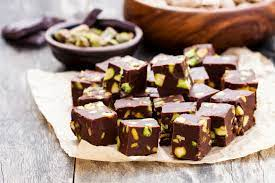

...Çikolata Küpleri...
Çikolatalı ve şam fıstıklı tadımlık lezzetler....Yalnızca 4 malzeme ilehazırlana çikolata küpleri,renkli kağıtlarda veya kürdan batırılarak servis edilir.Özellikle kalabalık sofralarda yer verilen çikolata küpleri,doğum günü gibi özel etkinliklerde de sunulabilir.
Tarif:Rukiye Beyza Sarıkaya

Kaç Kişilik:4 kişilik/ Hazirlama Süresi:30 dakika/ Pişirme Süresi:10 dakika
Çikitala Küpleri Tarifi İçin Malzemeler
- 350 gr bitter çikolata
- 150 ml krema
- 1 çorba kaşığı tereyağ
- 150 gr fıstık (Badem veya fındık da olabilir)
Çikolata Küpleri Nasıl Yapılır
- Bitter çikolatayı Benmari usulü eritin
- Eriyen çikolatanın üzerine krema ve tereyağı ekleyip iyice karıştırıp tencereyi bir tezgaha alın
- Şanfıstıkları havanda çok az dövülüp irili ufaklı parçalara bölün
- Ufalanan fıstıkları Çikolatalı karışıma ekleyip karıştırın
- Hzırladığınız çikolatayı varsa alüminyum hazır kare bir tepsiye yoksa kenarlarından taşarak yağlı kağıt yerleştirdiğiniz küçük bir tepsiye dökün
- Buzdolabında 2 saat bekletin
- çikolatayı kalıptan çıkartın ve kare parçalara bölün
Afiyet Olsun